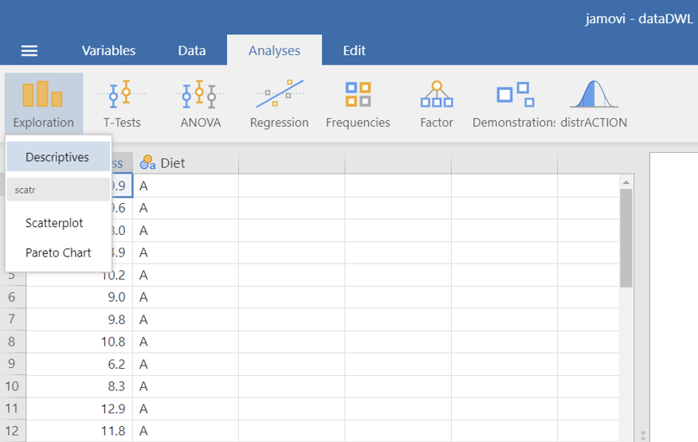
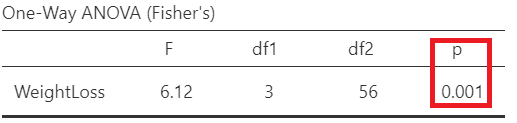

flowchart LR A(Analyses) -.-> B(Exploration) -.-> C(Descriptives)
6 LAB VII: Inference for numerical data (>2 samples)
When we have finished this Lab, we should be able to:
6.1 Introduction
The one-way analysis of variance (one-way ANOVA) or the non-parametric Kruskal-Wallis test are used to detect whether there are any differences between more than two independent (unrelated) samples.
Although, these tests can detect a difference between several groups they do not inform about which groups are different from the others. At first sight we might clarify the question by comparing all groups in pairs with t-tests or Mann-Whitney U tests. However, that procedure may lead us to the wrong conclusions (known as multiple comparisons problem).
Why is this procedure inappropriate? Quite simply, because we would be wrongly testing the null hypothesis. Each comparison one conducts increases the likelihood of committing at least one Type I error within a set of comparisons (famillywise Type I error rate).
This is the reason why, after an ANOVA or Kruskal-Wallis test concluding on a difference between groups, we should not just compare all possible pairs of groups with t-tests or Mann-Whitney U tests. Instead we perform statistical tests that take into account the number of comparisons (post hoc tests). Some of the more commonly used ones are Tukey test, Games-Howell test, and Bonferroni correction.
6.2 One-way Analysis of Variance (ANOVA)
One-way analysis of variance, usually referred to as one-way ANOVA, is a statistical test used when we want to compare several means. We may think of it as an extension of Student’s t-test to the case of more than two samples.
6.2.1 Opening the file
Open the dataset named “dataDWL” from the file tab in the menu:

The dataset “dataDWL” has 60 participants and includes two variables (Figure 9.5). The numeric WeightLoss variable and the Diet variable (with levels A, B, C and D).
6.2.2 Research question
Consider the example of the variations between weight loss according to four different types of diet (A, B, C, and D). The question that may be asked is: does the average weight loss (units in kg) differ according to the diet?
6.2.3 Hypothesis Testsing for the ANOVA test
6.2.4 Assumptions
A. Explore the descriptive characteristics of distribution for each group and check for normality
The distributions can be explored visually with appropriate plots. Additionally, summary statistics and significance tests to check for normality (e.g., Shapiro-Wilk test) and for equality of variances (e.g., Levene’s test) can be used.
On the Jamovi top menu navigate to
as shown below in Figure 6.2.

The Descriptives dialogue box opens. Drag the variable WeightLoss into the Variables field and split it by the Diet variable. Additionally, select Variable across rows, as shown below (Figure 6.3):

We can now select the relevant descriptive statistics such as Percantiles, Skewness, Kurtosis and the Shapiro-Wilk test from the Statistics section (Figure 6.4):

Once we have selected our descriptive statistics, a table will appear in the output window on our right-hand side, as shown below (Figure 6.5):

The means are close to medians and the standard deviations are also similar indicating normal distributions for all groups. Additionally, both shape measures, skewness and (excess) kurtosis, have values in the acceptable range [-1, 1] which indicate symmetric and mesokurtic distributions, respectively.
The Shapiro-Wilk tests of normality suggest that the data for the WeightLoss in all groups are normally distributed (p > 0.05 \(\Rightarrow H_0\) is not rejected).
Remember: Hypothesis testing for Shapiro-Wilk test for normality
\(H_{0}\): the data came from a normally distributed population.
\(H_{1}\): the data tested are not normally distributed.
- If p − value < 0.05, reject the null hypothesis, \(H_{0}\).
- If p − value ≥ 0.05, do not reject the null hypothesis, \(H_{0}\).
Then we can check the Density box from Histograms in the Plot section, as shown below (Figure 6.6):

A graph (Figure 6.7) is generated in the output window on our right-hand side:
The above density plots show that the data are close to symmetry and the assumption of a normal distribution is reasonable for all diet groups.
B. Homogeneity of variance
The second assumption that should be satisfied is the homogeneity of variance. We observe in the summary table of Figure 6.5 that the standard deviations are similar (see also below the Levene’s test for equality of variances in Figure 5.11).
6.2.5 Run the ANOVA test
Perform ANOVA in Jamovi
We will perform ANOVA to test the null hypothesis that the mean WeightLoss is the same for all Diet groups.
On the Jamovi top menu navigate to
flowchart LR A(Analyses) -.-> B(ANOVA) -.-> C(One-Way ANOVA)
as shown below in Figure 6.8.

The One-Way ANOVA dialogue box opens. Drag and drop the WeightLoss to Dependent Variables field and the Diet to Grouping Variable, as shown below Figure 6.9:
We observe that we can select between the following two Tests: Welch’s test (the default), or Fisher’s test. At the moment, we keep the default choice. Moreover, from Additional Statistics check the Descriptive and Descriptive plots boxes. Finally, from Assumption Checks tick the Homogeneity test box. We will end up with the following screen:
First, we look at the table of Levene’s test for equality of variances (Figure 6.11):

Remember: Hypothesis testing for Levene’s test for equality of variances
\(H_{0}\): the variances of WeightLoss in all groups are equal (\(σ^2_A=σ^2_B=σ^2_C=σ^2_D\))
\(H_{1}\): the variances of WeightLoss differ between groups (\(σ^2_i\neq σ^2_j\), where \(i,j= A, B, C, D\) and \(i\neq j\))
- If p − value < 0.05, reject the null hypothesis, \(H_{0}\).
- If p − value ≥ 0.05, do not reject the null hypothesis, \(H_{0}\).
Since p = 0.583 > 0.05, the \(H_0\) of the Levene’s test is not rejected and we have to perform the Fisher’s test which assumes equal variances (Figure 6.12). So, let’s tick on the Assume equal (Fisher’s) box. (NOTE: If the \(p \geq 0.05\), then the population variances of WeightLoss in all groups are assumed equal).

Next, we can inspect again the results in the group descriptives table (Figure 6.13) and pertinent plots (Figure 6.13):


From the Figure 6.14 we observe that the participants following the diet C have on average the higher weight loss.
Finally, we present the results of the Fisher’s ANOVA test in the table of Figure 6.15:

In Figure 6.15, F= 6.12 indicates the F-statistic:
\[F= \frac{variation \ between \ sample \ means}{variation \ within \ the \ samples}\]
Note that we compare this value to an F-distribution (F-test). The degrees of freedom in the numerator (df1) and the denominator (df2) are 3 and 56, respectively.
The p-value=0.001 is less than 0.05 (reject \(H_0\) of the ANOVA test). There is at least one diet with mean weight loss which is different from the other means.
6.2.6 Run post-hoc tests
Perform post-hoc tests
A significant one-way ANOVA is generally followed by post-hoc tests to perform multiple pairwise comparisons between groups. From the One-Way ANOVA dialogue box click on Post-Hoc Tests section. We have got the following two options:
Games-Howell (unequal variances)
Tukey (equal variances)
Based on the result of Levene’s test (p = 0.583 > 0.05, the \(H_0\) is not rejected) (Figure 6.11), we should select the Tukey (equal variances) post-hoc test. Additionally, check the Flag significant comparisons as shown below (Figure 6.16):

Once we have selected our post-hoc test, a table will appear in the output window on our right-hand side, as shown below (Figure 6.17):

Interpretation
Pairwise comparisons were carried out using the method of Tukey and the adjusted p-values were calculated. The weight loss following diet C is significantly larger compared to diet A (mean difference = 2.93 kg, p=0.005 <0.05) or diet B (mean difference = 3.21 kg, p=0.002 <0.05).